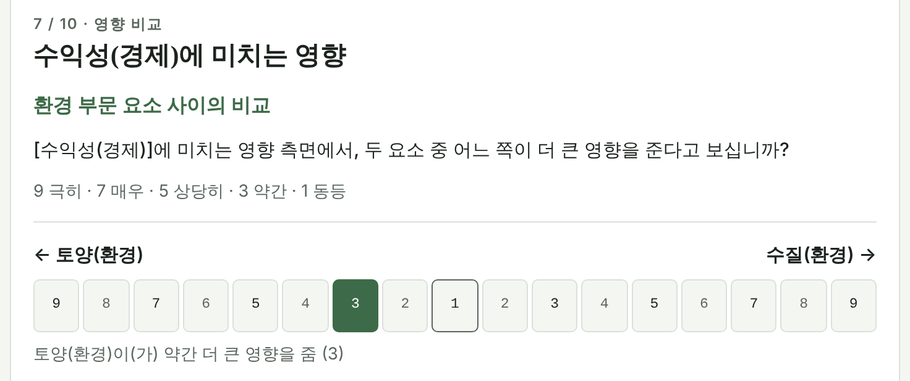

설문 응답 방법 안내
두 요소를 짝지어 비교하는 설문입니다. 1부는 중요도(AHP), 2부는 영향의 크기(ANP)를 묻습니다. 약 15분 걸립니다.
성함 입력→1부 중요도 비교 15문항→2부 영향 비교 28문항→확인 후 제출
중요도 비교
같은 상위 항목에 속한 두 요소 중 농가를 평가할 때 어느 쪽이 더 중요한지, 그리고 얼마나 더 중요한지 고릅니다. 요소 이름 옆 괄호는 그 요소가 속한 부문입니다.
척도 읽는 법
| 1 | 3 | 5 | 7 | 9 |
| 동등 | 약간 더 | 상당히 더 | 매우 더 | 극히 더 |
가운데 1에서 더 중요한 요소 쪽으로 갈수록 숫자가 커집니다. 2·4·6·8은 그 사이 값입니다.

위 예시는 "토양이 수질보다 약간 더 중요하다(3)"는 응답입니다.
일관성 안내가 나오면
숫자는 '몇 배'로 이어집니다. A가 B보다, B가 C보다 중요하다고 하셨다면 A는 C보다 더 중요해야 자연스럽습니다. 응답이 크게 어긋나면 가장 어긋난 문항이 붉게 표시됩니다.

표시된 문항이나 관련 문항을 다시 살펴봐 주세요. 검토 후에도 판단을 유지하시려면 [검토했습니다. 현재 응답으로 진행]을 누르시면 됩니다.
영향 비교
여기서는 중요도가 아니라 영향의 크기를 묻습니다. 사전 조사(DEMATEL)에서 서로 영향이 있다고 나타난 관계만 나오며, 척도는 1부와 같습니다.
요소 간 영향
영향을 받는 요소를 기준으로, 같은 부문에 속한 두 요소 중 어느 쪽이 그 요소를 더 크게 좌우하는지 고릅니다.

위 예시는 "수익성을 더 크게 좌우하는 것은 수질보다 토양이며, 그 정도는 약간(3)"이라는 응답입니다.
부문 간 영향 (마지막 화면)
한 부문의 요소들이 받는 영향이 어느 부문에서 더 많이 오는지 비교합니다. '○○ 부문 내부'는 그 부문 요소들끼리 서로 주고받는 영향입니다.

위 예시는 "환경 요소들은 사회 요소들보다 환경 요소들끼리 주고받는 영향을 조금 더 크게 받는다(2)"는 응답입니다.
마지막 확인 화면에서 묶음별 일관성을 확인하고 [제출하기]를 누르시면 끝납니다. 같은 성함으로 다시 제출하시면 이전 응답이 새 응답으로 바뀝니다.